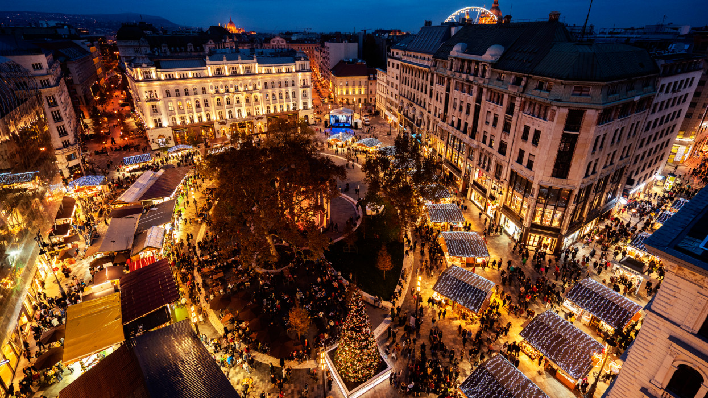

Üdvözlünk a karácsonyi vásárban!
Bevezető
A Karácsony közeledtével elkezdődik a nagy készülődés. Az üzletek már valamikor október végén kirakják a karácsonyi portékájukat, sokszor sokkolva a vásárlókat. Ilyenkor szembesülünk a ténnyel, hogy már nem sokáig élvezhetjük a kellemes őszi napokat. Az adventi időszak elérkezésével már csak az ünnepekre gondolunk. Mi is az advent?
Az advent szó jelentése „eljövetel”. A latin „adventus Domini” kifejezésből származik, ami annyit tesz: „az Úr eljövetele”. A keresztény vallás szerint pontosan meghatározott napon kezdődik és négy hétig tart, magában foglalva négy vasárnapot. Szent András napjához (november 30.) legközelebbi vasárnapon veszi kezdetét és december 25-ig tart. Az adventi időszak pontosan december 24-én ér véget, napnyugta után. De mit is ünnepelünk adventkor? Az advent az Úr megérkezésére való felkészülés időszaka, amikor a hívők újra átélik az Isten eljövetele utáni vágyódást és a megtérést, amelyet ez az esemény előkészít.
Egykor az adventi időszakra jellemző volt a böjt is, amely a húsvéti nagyböjttel ellentétben nem volt olyan szigorú. Ami az étkezést illeti, a katolikus körökben korábban a heti három nap volt kötelező: szerda, péntek és szombat, ilyenkor tilos volt húst és tejtermékeket fogyasztani. A szigorú böjt később két napra (szerda és péntek) csökkent. Ebben az időszakban kerülték a zajos mulatságokat, táncokat, és lakodalmat sem tartottak. A kocsmákban csak az átutazó vendégeket szolgálták ki. Ennek hagyománya a 20. század közepén eltűnt.
Szinte mindenhol az egyházi liturgiákat népszokások és a babonák betartása egészítette ki. Ilyen többek között az adventi koszorú, amelyet először valamikor 19-20. században készítettek. 1839-ben Johann H. Wichern német evangélikus lelkész felfüggesztett szekérkeréken 23 gyertyát helyezett el, és karácsonyig minden nap eggyel többet gyújtott meg. Valószínű a rohanó világnak köszönhetően, ma az adventi koszorún négy gyertya díszeleg, a négy adventi vasárnapot jelképezve. Minden gyertya szimbolizál egy fogalmat: hit, remény, öröm és szeretet. Borbála napja (december 4.) Szent Borbála a hagyomány szerint Kisázsiában élt és a keresztény hitéért megkínozták és lefejezték. Borbála napján szokás volt vízbe tenni egy cseresznyefa ágat, ha ez Karácsonyra kizöldült, kivirágzott, akkor a népi hiedelem szerint a következő évben egyrészt házasságot jelentett, másrészt az év jó termésére utalt. Borbála napján tilos volt a fonás, varrás és a takarítás.
Hagyományosan advent első napjaiban nyitják meg kapuikat az adventi vásárok is szerte a világban. Ma már nem kell egészen Bécsig utazni, hogy a karácsonyi vásár hangulatát megtapasztaljuk, itthon is szinte minden városban hagyománnyá váltak. Ilyenkor állítják fel a városok a saját karácsonyfájukat, és díszkivilágításba borulnak az utcák. Különlegesek a hagyományőrző vásárok is, amelyek bemutatják az ősi mesterségeket, amelyek manapság már sajnos kihalóban vannak. Ilyen a Vörösmarty téren levő vásár, amely nem csak a kárpátmedencei hagyományokat őrző gasztrokulturális élvezetett nyújtó helyek miatt vonzó sok tízezer látogató számára. Ilyenkor egy kis ízelítőt kaphatunk a ma Magyarországon alkotó kézművesek gyönyörű munkáiból, amelyek bárhol a világon megállnák a helyüket. Idén közel két héttel korábban, november 13-án kezdődik a vásár sok-sok programmal. Miklós napja (december 6.) Mürai Szent Miklós püspök volt többek között a nehéz körülmények között élők védőszentje. Életéről sok legenda született, ezekből alakult ki a Mikulás személye is (a neve cseh eredetű). Állítólag az éjszaka leple alatt ajándékokat osztogatott a szegényeknek úgy, hogy azok nem is sejtették kitől kapták. Így ezen a napon mi is készítünk a Mikulás nevében jelképes ajándékokat, amelye-ket mi is titokban helyezünk el a csizmákba. Az ajándékozás eredete Ausztriából ered.
Egykor az adventi időszakra jellemző volt a böjt is, amely a húsvéti nagyböjttel ellentétben nem volt olyan szigorú. Ami az étkezést illeti, a katolikus körökben korábban a heti három nap volt kötelező: szerda, péntek és szombat, ilyenkor tilos volt húst és tejtermékeket fogyasztani. A szigorú böjt később két napra (szerda és péntek) csökkent. Ebben az időszakban kerülték a zajos mulatságokat, táncokat, és lakodalmat sem tartottak. A kocsmákban csak az átutazó vendégeket szolgálták ki. Ennek hagyománya a 20. század közepén eltűnt. Szinte mindenhol az egyházi liturgiákat népszokások és a babonák betartása egészítette ki. Ilyen többek között az adventi koszorú, amelyet először valamikor 19-20. században készítettek. 1839-ben Johann H. Wichern német evangélikus lelkész felfüggesztett szekérkeréken 23 gyertyát helyezett el, és karácsonyig minden nap eggyel többet gyújtott meg. Valószínű a rohanó világnak köszönhetően, ma az adventi koszorún négy gyertya díszeleg, a négy adventi vasárnapot jelképezve. Minden gyertya szimbolizál egy fogalmat: hit, remény, öröm és szeretet.